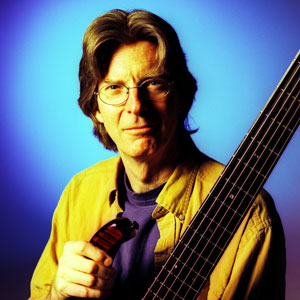

Phil Lesh

Phil Lesh the band’s bassist is known as one of the strongest intellects and most extraordinary musical talents in rock history. Starting as a classical violinist, and soon switching to trumpet, Lesh enrolled at UC Berkely to become a music major. After dropping out of college, he enrolled himself in Luciano Berio’s class at Mills College where he was finally given the opportunity to compose his own music. After returning to California the following summer Lesh met Garcia at a bookstore, and after hearing him play the banjo, asked him to play for the radio show Lesh was an engineer for, and the two quickly became friends. While attending a Warlocks show in a pizza parlor, his friend Jerry Garcia informed him he was the new bass player for the band, and with Lesh responding, “Why not”? He created his destiny.